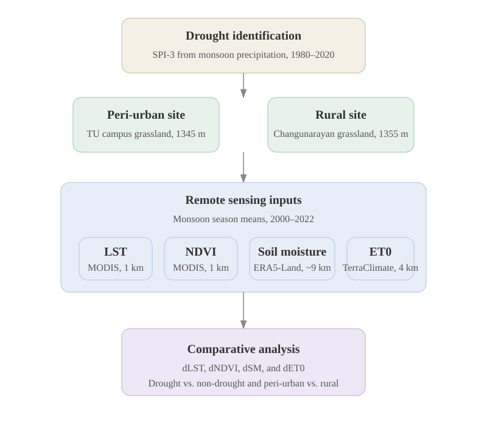

01 / Introduction
Rapid urbanization in the Kathmandu Valley has intensified local warming, creating persistent peri-urban heat islands. Yet, how this baseline warming interacts with monsoon droughts to stress grassland ecosystems remains poorly quantified.
Why it matters: Drought is a recurring planning stressor, not just a rainfall anomaly. Understanding peri-urban vulnerability helps target green infrastructure, water management, and thermal mitigation in rapidly growing South Asian cities.
02 / Study Area & Data Sources
We compare two carefully selected grassland sites to isolate urbanization effects from confounding land-use factors:
- Peri-urban: Tribhuvan University premises (proximity to urban core, transitional land cover)
- Rural: Changunarayan, Bhaktapur (minimal urban influence, comparable elevation & climate)

Data & Variables (JJASO Monsoon Season, 2000-2022)
- LST: MODIS Terra (MOD11A2), 1 km
- NDVI: MODIS Terra (MOD13Q1), 250 m
- Soil Moisture: ERA5-Land (0-7 cm), 0.1 degree
- ET0/PET: TerraClimate, 4 km
- Precipitation & SPI-3: DHM records (1980-2020 baseline)
03 / Methodology
Our workflow integrates meteorological drought identification with remote sensing land-surface analysis:
- Drought Classification: Monsoon-mean SPI-3 derived from 1980-2020 precipitation. Drought years = negative monsoon SPI values.
- Seasonal Aggregation: All variables averaged over the JJASO (June-October) monsoon window for 2000-2022.
- Comparative Analysis: Peri-urban vs. rural contrasts computed for LST, NDVI, soil moisture, and ET0. Anomalies and percent differences calculated for drought vs. non-drought subsets.
- Ecological Stress Mapping: NDVI declines coupled with soil moisture depletion and elevated evaporative demand to quantify vulnerability amplification.

04 / Key Results
Monsoon droughts reshape thermal and ecological gradients across the urban-rural continuum:
Time series, anomaly plots, and statistical comparisons are fully interactive. Hover for tooltips, toggle layers, and export figures.
05 / Discussion
Our findings challenge the assumption that reduced urban-rural temperature contrast during droughts implies lower risk. Instead:
- Latent vulnerability: Persistent background heating in peri-urban zones creates a "compounding stress" effect, where grasslands face elevated ecological pressure even under similar meteorological drought conditions.
- Indicator sensitivity: Soil moisture and NDVI respond more sharply than LST during dry monsoons, making them critical early-warning metrics for peri-urban land managers.
- Methodological value: Dashboard-driven presentation enables real-time inspection, reproducibility, and iterative updates beyond the static poster format.

06 / Policy & Planning Implications
Translating science into actionable urban climate resilience:
- Integrate drought-heat metrics into municipal water-security and heat-risk planning frameworks.
- Prioritize peri-urban greening with drought-resilient native species and soil moisture retention strategies.
- Protect transitional landscapes from unregulated conversion, as they serve as critical thermal and ecological buffers.
- Adopt living dashboards as decision-support tools for local agencies, enabling dynamic monitoring and adaptive management.